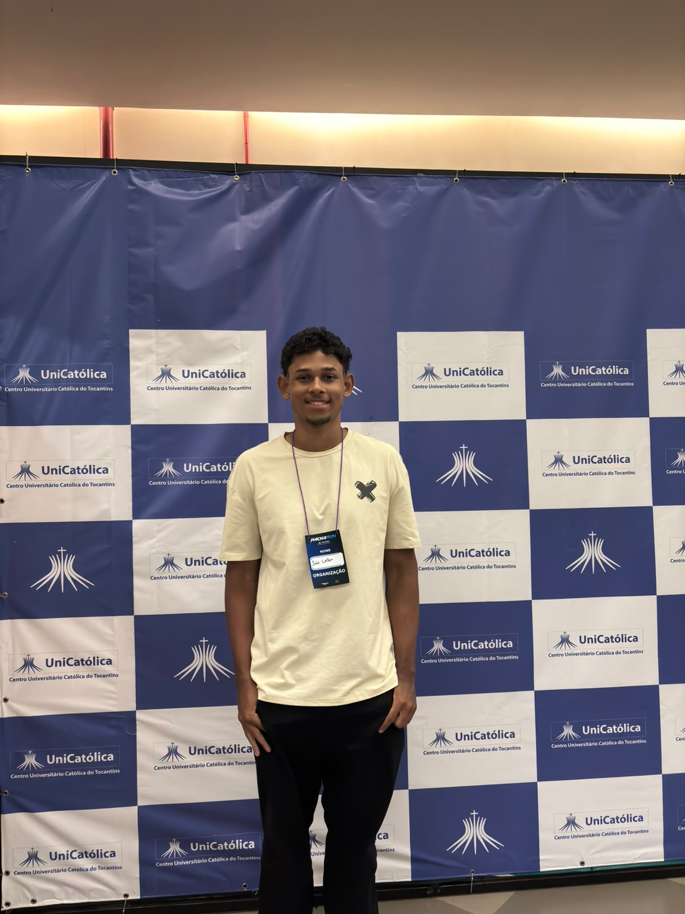
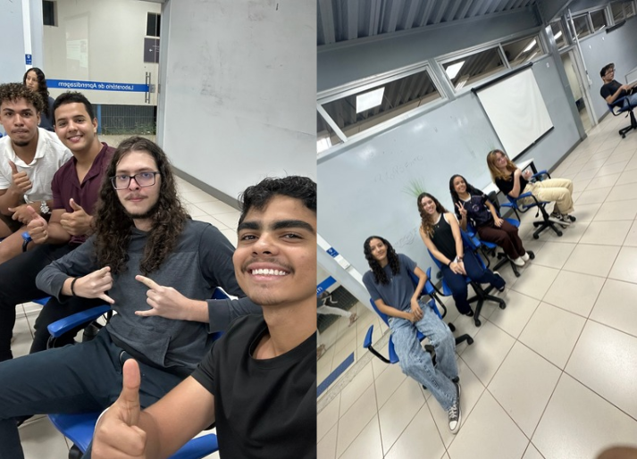
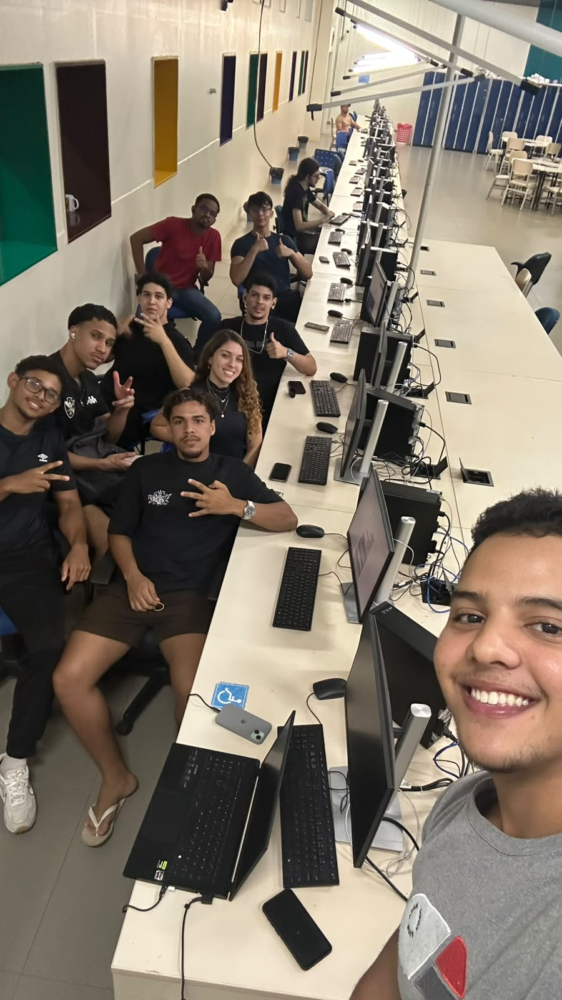
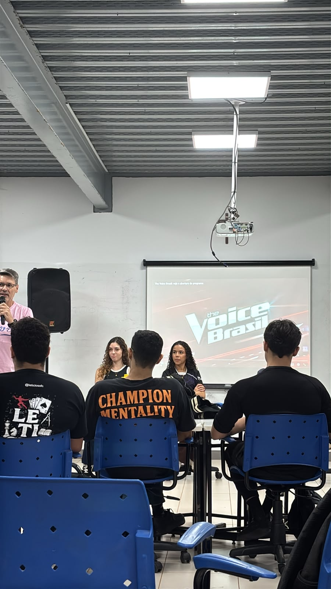

Habilidades e competências
Reconhecer meus recursos naturais e aprimorá-los na prática.
Vivências em sala, reflexões pessoais e aprendizados para além da técnica.
João Victtor de Sousa Cortes
FC20261674
Antônio Cesar
Engenharia de Software — UniCatólica

João Victtor de Sousa Cortes · Pessoas, escolhas e desenvolvimento
A disciplina conectou autoconhecimento, convivência, responsabilidade social e expressão criativa ao longo de seis encontros, com atividades presenciais e no AVA, tendo a felicidade como temática central.
Reconhecer meus recursos naturais e aprimorá-los na prática.
Analisar condutas, valores e os filtros do querer, poder e dever.
Compreender como o networking e as relações influenciam o futuro.
Refletir sobre alegria como potência do agir e vínculos genuínos.
Cada encontro presencial expandiu minha percepção sobre identidade, competências técnicas e humanas, escolhas éticas e colaboração em equipe.
Dinâmica inicial de apresentação entre os acadêmicos, alinhamento da proposta da disciplina com o Prof. Antônio Cesar e reflexão sobre identidade digital e o sentido da felicidade.
Refleti sobre a ideia de que 'sua rede social é o espelho de você', mostrando como nossa postura online comunica nossos princípios antes mesmo de qualquer contato profissional. Também discutimos 'o que é felicidade para você?' e escolhemos um objeto capaz de representar esse conceito na nossa trajetória.
“Nossa presença no mundo — inclusive nas redes sociais — é um reflexo direto da nossa identidade, dos nossos valores e daquilo que escolhemos cultivar como felicidade.”

TSoftware · UniCatólica
Discussão sobre a diferença entre habilidade e competência, análise da importância do networking profissional a partir da parceria de Carl Benz e August Ritter, e aprofundamento filosófico sobre felicidade e alegria.
Aprimorar uma habilidade é o que realmente torna você competente. No meu mapeamento pessoal, destaquei minha facilidade com matemática, lógica e lógica de programação — bases que lapido constantemente na Engenharia de Software. Também ficou marcada a visão de que felicidade é um instante que vale por si só, enquanto alegria é o aumento da potência do agir, somada à importância de criar networking para o mercado de trabalho.
“Aprimorar nossas habilidades transforma potencial em competência, e construir boas parcerias multiplica nossa potência de agir.”

Registro 01 · Bússola e dinâmica em sala

Registro 02 · Carl Benz & August Ritter — Networking
Exposição dialogada e estudo de casos sobre princípios éticos, normas morais e os padrões fundamentais que orientam a tomada de decisão humana e profissional.
O ponto central da aula foi aplicar os padrões da ética: Quero, Posso e Devo. Na área de tecnologia, nem tudo o que queremos ou tecnicamente podemos desenvolver é algo que devemos fazer. Avaliar cada escolha por essa tríade traz segurança e responsabilidade para agir com integridade.
“A verdadeira consciência ética nasce no equilíbrio entre o que eu quero, o que eu posso e o que eu realmente devo fazer.”

Análise de dilemas cotidianos e responsabilidade social
O professor orientou a turma a acessar o Ambiente Virtual de Aprendizagem (AVA), pois parte dos alunos ainda não estava realizando as atividades propostas na plataforma. Em seguida, fomos ao Cubo, laboratório da faculdade, para acessar o AVA e realizar as atividades. Depois, a turma foi liberada.
Percebi que acompanhar o AVA com autonomia é parte da minha responsabilidade na disciplina. Realizar as atividades no laboratório ajudou a transformar o tempo de estudo em foco para aprender. Manter essas tarefas em dia também favorece o ritmo coletivo da turma e é uma postura de organização que levo para minha formação acadêmica e profissional.
Acompanhar as atividades do AVA com responsabilidade amplia a aprendizagem para além dos encontros em sala.

Atividade no AVA no laboratório Cubo · 23/09/2026
Aula dinâmica sobre competências e habilidades conduzida no formato do programa The Voice Brasil, desafiando os acadêmicos a exercitarem percepção, escuta e organização em grupos para a etapa criativa final.
A atividade inspirada no The Voice Brasil tirou a turma da zona de conforto e mostrou na prática como o trabalho em equipe exige escuta ativa, leitura de perfis e alinhamento rápido. Unir habilidades complementares do grupo foi essencial para estruturar nossa apresentação final.
“Cooperar é reconhecer o talento de cada integrante e somar habilidades complementares em torno de um objetivo comum.”

Dinâmica de competências e habilidades · The Voice Brasil
Culminância criativa da disciplina com a apresentação das paródias produzidas por 4 grupos da turma, integrando leitura, escrita, argumentação e expressão artística diante dos colegas.
Nosso grupo criou uma paródia baseada na música 'Ela é amiga da minha mulher', adaptando a letra para traduzir com criatividade e humor os aprendizados sobre ética, escolhas e convivência. Apresentar diante da turma consolidou o trabalho em equipe e mostrou como a expressão criativa fixa o aprendizado.
“Transformar conceitos teóricos em música e trabalho coletivo mostra que aprender também é criar, expressar e compartilhar.”

Apresentação das paródias em sala · 4 grupos (Base: Ela é amiga da minha mulher)
Quatro pilares consolidados ao longo do semestre que orientam minha postura acadêmica, minhas decisões técnicas e minhas relações interpessoais.
Entender a felicidade como um instante que vale por si só e a alegria como potência do agir fortalece minha base pessoal e minhas relações.
Aprimorar habilidades técnicas (matemática, lógica e programação) e construir parcerias estratégicas define o alcance da minha trajetória.
Aplicar o filtro do Quero, Posso e Devo garante integridade e responsabilidade em cada decisão tomada na Engenharia de Software.
Somar talentos distintos e praticar a escuta ativa transforma desafios em grupo em entregas criativas e consistentes.
Base musical do grupo: "Ela é amiga da minha mulher" • Clique em Editar Textos se desejar ajustar os versos.
Entrei na sala de aula querendo só programar,
Pensando em código limpo, sem muito tempo a gastar.
Mas o professor mostrou que antes de desenvolver,
É preciso ter valores pra saber como escolher.
Eu quero, eu posso, mas será que eu devo?
É com consciência ética que o futuro eu escrevo.
Felicidade é o instante que faz tudo valer,
E a alegria aumenta a potência de agir e vencer.
Na rede social o espelho reflete quem sou,
Cada atitude revela os princípios que alguém cultivou.
Carl Benz e August Ritter ensinaram a lição:
Parceria verdadeira multiplica a construção.
Com lógica e matemática fui lapidando o saber,
Transformando habilidade pra competente eu ser.
No ritmo do grupo inteiro, criamos nossa versão,
Unindo arte e conceito numa só apresentação.
Na dinâmica em equipe cada voz teve lugar,
Com escuta ativa e ritmo soubemos nos organizar.
Levamos para a turma inteira nossa reflexão final:
Ser bom engenheiro de software é ter ética profissional!
Leitura crítica das situações vivenciadas em sala e articulação coerente entre valores éticos, escolhas pessoais e atuação profissional.
Adaptação criativa da composição musical em equipe, traduzindo fundamentos filosóficos e morais em linguagem original e envolvente.
Estruturação coletiva dos versos, revisão rítmica e expressão comunicativa segura durante a apresentação diante dos colegas e do professor.